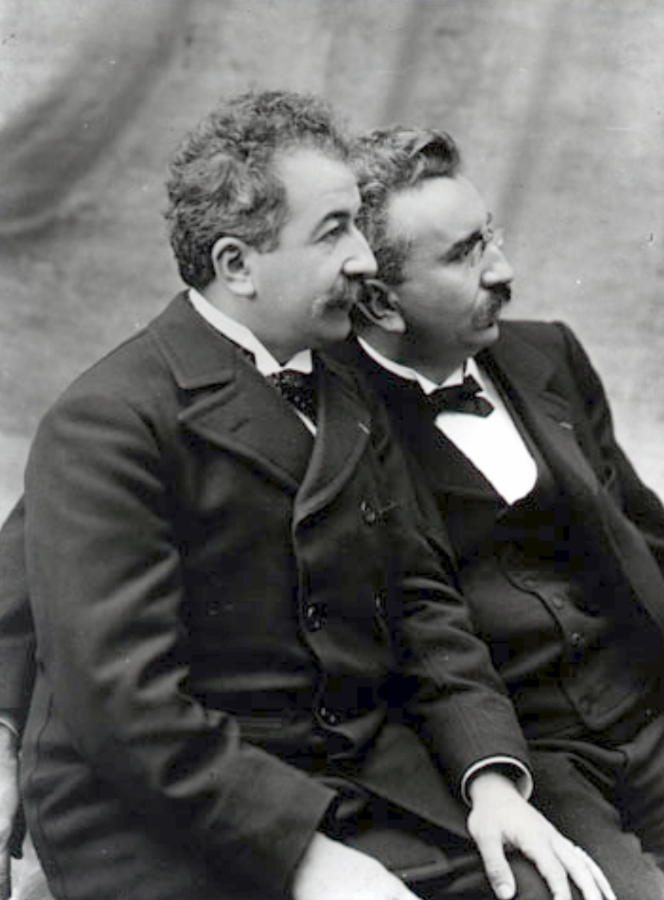

1. Origines and creators
The origins of cinema can be traced back to the late 19th century when inventors and visionaries were exploring the possibilities of capturing and projecting moving images. One of the early pioneers in this field was Thomas Edison, who developed the Kinetoscope in 1891, a device that allowed individuals to view short motion pictures. However, it was the Lumière brothers, Auguste and Louis, who are often credited with the birth of modern cinema. In 1895, they presented their Cinématographe, a portable motion picture camera and projector, to a mesmerized audience in Paris, marking the beginning of a new era in entertainment and storytelling. The Lumière brothers' invention paved the way for the development of the film industry as we know it today. In the first photo we see the Light Brothers while in the second we observe Thomas Edison.
2. Reasons to love cinema
Cinema holds a special place in the hearts of people for several compelling reasons. Firstly, it's a powerful medium for storytelling, allowing audiences to immerse themselves in diverse narratives and experiences. Whether it's a gripping thriller, a heartwarming drama, or a fantastical adventure, cinema offers a wide range of emotions and stories to connect with. Furthermore, it serves as a form of escapism, providing a temporary retreat from the realities of everyday life. The magic of the silver screen transports viewers to different times and places, sparking their imagination and curiosity. Additionally, cinema is a communal experience, where individuals come together to share laughter, tears, and a sense of wonder. The shared emotions and discussions that follow a movie create a sense of community and connection. Ultimately, the visual and auditory splendor of cinema, along with its ability to evoke deep emotions and provoke thought, is what makes it an art form cherished by many.